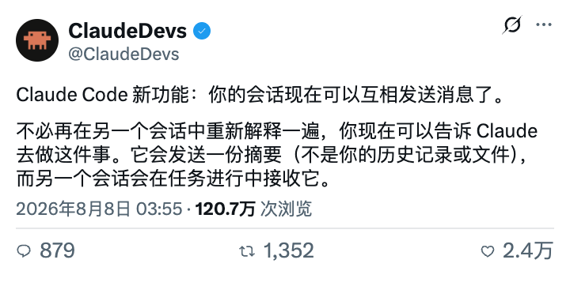
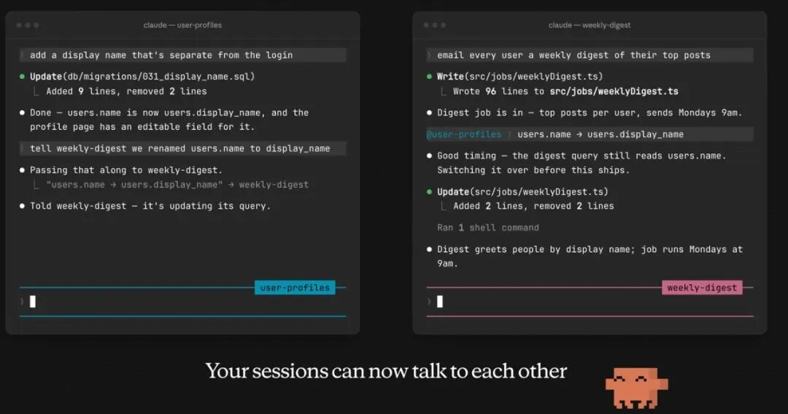
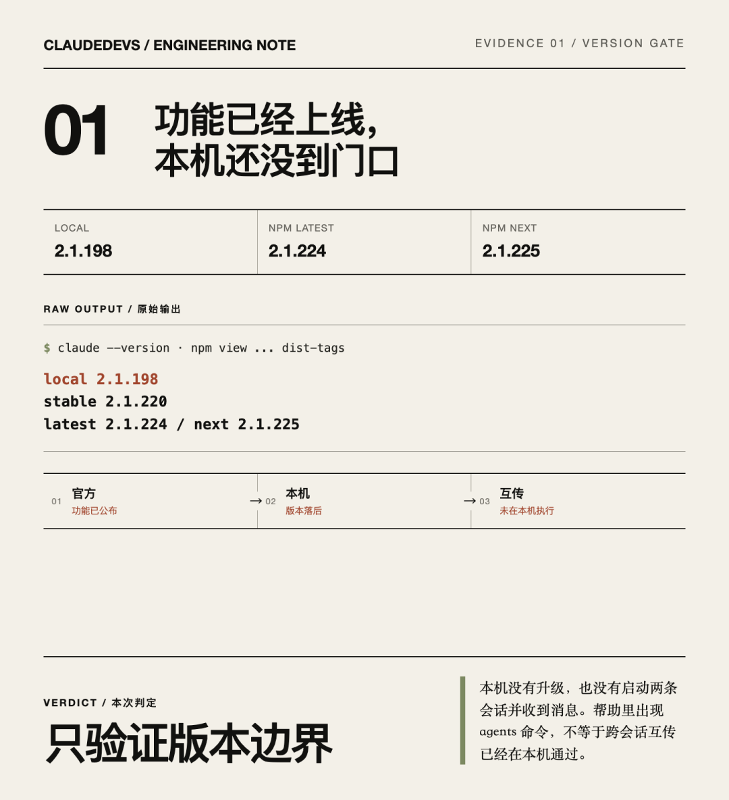

Claude Code会话能互传了：别再复制上下文
今天凌晨 03:55，Claude Developers 公布了一个很容易被低估的更新：Claude Code 的不同会话，现在可以互相发送消息。
你不必再打开另一个终端，把背景重新解释一遍。可以直接告诉当前 Claude：“把这次字段改名通知给 weekly-digest 会话。”系统会发送一份摘要，另一个会话在任务进行中接收并继续处理。

这不是“共享全部上下文”。官方特意写清楚：传过去的是摘要，不是你的历史记录，也不是文件。这个边界决定了它到底是提效工具，还是新的混乱放大器。
以前最浪费Token的，是重复交接
多会话并行时，真正昂贵的往往不是模型回答，而是人类反复做交接。
一个会话改了数据库字段，另一个会话还在写周报查询；一个会话发现接口需要新增参数，另一个会话仍按旧契约补测试。你通常要复制 commit、路径、错误和下一步，再担心漏掉关键边界。
官方演示里，左侧会话把 users.name 改成 display_name，随后通知右侧的 weekly-digest。右侧收到摘要后，发现自己的查询仍读取旧字段，于是切换到新字段继续工作。

这类交接不需要把整段聊天倒给对方。对接收者真正有用的通常只有四项：发生了什么、影响哪里、证据是什么、接下来要做什么。
我先做了版本门槛检查
本机今天早上的 claude --version 返回 2.1.198。npm 官方注册表同时显示：latest 标签是 2.1.224，stable 标签是 2.1.220，next 标签已经到 2.1.225。
本机帮助里已经有 claude agents，能查看和管理后台会话；但版本仍落后于今天官方演示对应的最新发布，因此我没有把“帮助里看见 Agent 列表”冒充成“跨会话互传已在本机验证成功”。

这里的结论很明确：功能事实来自官方发布；本机只验证了版本差距与现有命令面。没有升级、没有启动两条会话、没有收到消息，就不能写本机 PASS。
正确用法，是传交接包，不是传一句“你看着办”
跨会话消息最怕模糊。发送者如果只说“另一个模块改了，你跟一下”，接收者仍要重新调查，还可能沿着错误假设继续跑。
更稳的消息可以固定成下面这份模板：
变更：users.name 已改为 users.display_name
影响：weekly-digest 的用户查询和测试夹具
证据：迁移 031 已执行，相关测试通过
动作：更新查询与夹具，不修改迁移文件
边界：不要读取或复制另一会话的未提交文件
它只有五行，却把事实、范围和权限说清楚。摘要越短，越要避免省略验证状态和禁止事项。
两条会话照着这四步开
第一步，先检查双方版本：
claude --version
npm view @anthropic-ai/claude-code version dist-tags --json
第二步，给会话起能表达职责的名字，不要使用 session-1、test2 这种看不出所有权的标签：
claude --name user-profiles
claude --name weekly-digest
第三步，让发送会话明确说出目标会话与交接包。官方演示使用自然语言通知；接收会话在当前任务中收到摘要，不需要重新开一轮解释。
第四步，接收者先复述影响范围，再改代码。若目标会话不存在、名称不唯一、版本不支持或消息迟迟不到，就停止重发，改用 commit、PR 或明确的文本交接。
会传话，不等于会自动解决冲突
跨会话通信解决的是“信息送达”，没有解决文件隔离、提交顺序和最终所有权。
两个会话如果同时改同一工作目录，消息再及时也可能互相覆盖。需要并行写代码时，仍应使用独立 worktree 或分支；需要共享结果时，仍应通过 commit、测试和 diff 交付。
还要注意一条安全边界：收到另一会话的消息，不应自动获得更高权限。尤其是删除、发布、生产变更和密钥操作，必须由当前会话重新按自己的权限规则判断。
最适合它的，不是所有并行任务
跨会话互传最适合存在明确依赖、但不需要共享全部文件的工作：后端字段影响前端、接口变化影响文档、修复结论影响测试、数据口径影响报告。
如果两个任务完全独立，就别为了“多 Agent”制造聊天；如果两个任务高度耦合到同一批文件，也不该只靠消息协调，合并成一个负责人反而更省。
Claude Code 这次真正减少的，是复制上下文的成本。它没有让所有会话变成一个大脑，而是给它们加了一条可控的交接通道。
把事实压成一份好摘要，把修改留在各自边界里，这个功能才会省 Token；否则只是让错误跑得更快。